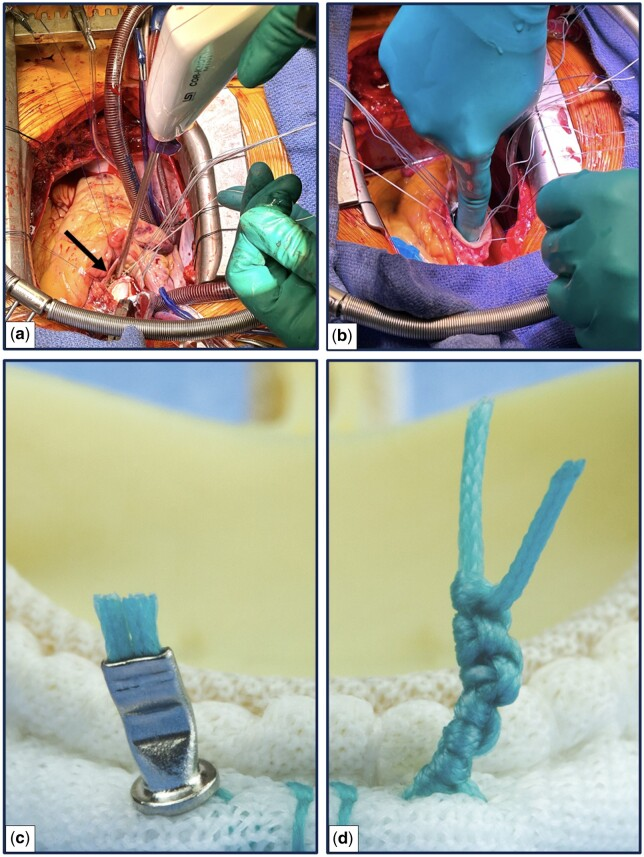
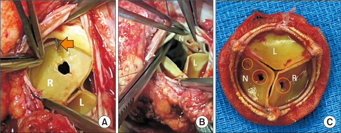
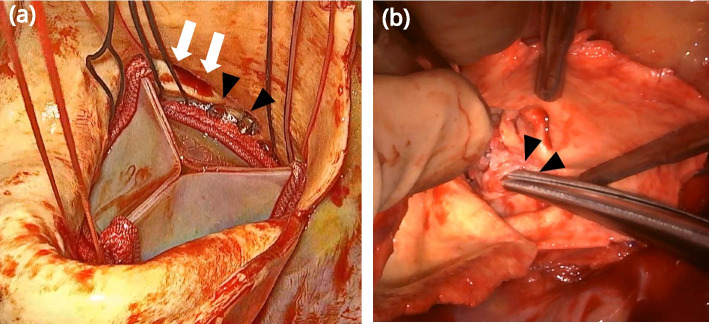
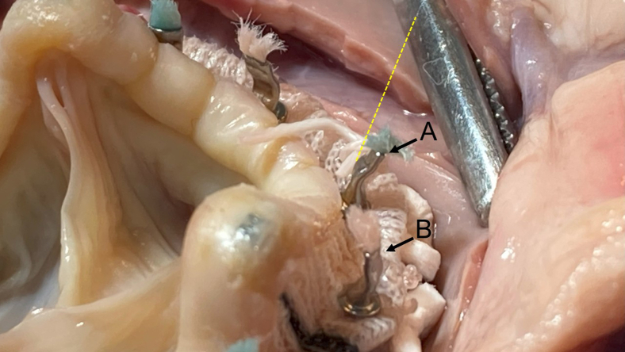
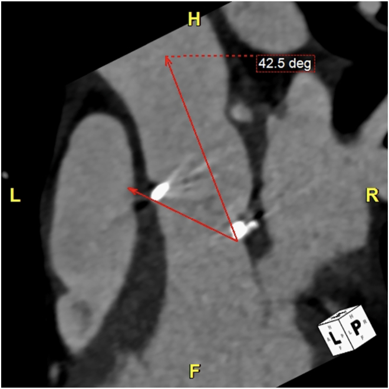
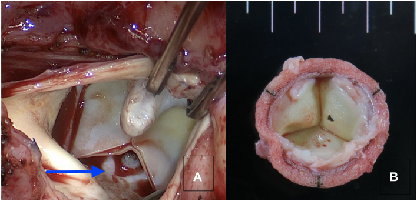

Cor-Knot（自動チタンファスナー）の合併症とPitfall
弁膜症手術における自動縫合結紮デバイスの落とし穴と、安全な手技の実践
Cor-Knot®（LSI Solutions社）は、手結び結節（hand-tied knot）を圧着式チタンファスナーに置き換える自動結紮デバイスである。1結節を10秒台で終える高速性と、狭く深い術野でも一定の締結圧を得られる利点から、低侵襲（MICS）・完全内視鏡下・ロボット弁膜症手術の**実現技術（enabling technology）**として急速に普及した。一方で「金属異物を弁輪に留置し、鋭利な断端を残す」というデバイスの本質に由来する固有の合併症——弁尖穿孔・大動脈基部損傷・冠動脈干渉・遅発性塞栓——が症例報告として蓄積している。
本稿は Cor-Knot 関連の PubMed 文献 61本（2010–2026、症例報告・比較研究・メタアナリシス・レジストリ・動物実験・MAUDE解析を含む）を機械収集し、8観点で構造化・敵対的検証（引用PMID・数値の要旨照合）したうえで統合したものである。各記述にはPMIDをハイパーリンクしており、クリックで一次資料に当たれる。前半で合併症・Pitfallを機序別に、後半で「どう打つべきか」を実践ガイドとしてまとめた。
- 左サイドバーは見出しベースの目次。クリックでジャンプ、スクロールで現在地がハイライトされる。
- サイドバー上部の検索窓にキーワード（例:
穿孔,垂直,RCA,MAUDE,塞栓）を入れると本文をハイライトし、Enter/↑↓で一致箇所を移動、件数も表示。キーボードの/で検索窓にフォーカス。 - 各引用（例: PMID 39790133）はPubMedへのリンク。追加学習はここから一次資料へ。
- 末尾に全文献リスト（61本）。掲載写真はオープンアクセス（CC BY / CC BY-NC）論文からの引用で、各図に出典・ライセンスを明記している。
Cor-Knot の**重大合併症の大半は症例報告（エビデンスレベルは低い）**であり、分母（総使用数）が不明なため「頻度」を論じにくい。一方、単施設・多施設コホート（PMID 34099017、PMID 39784471）では穿孔・塞栓ゼロの報告もあり、合併症は「デバイスの宿命」ではなく「術者依存の手技エラー」という性格が強い。数値は因果でなく関連として読み、自施設の適応・経験に当てはめて解釈すること。MAUDE解析（PMID 40098839）は有害事象報告の集計であり、真の発生率ではない点にも注意。
総論：なぜ Cor-Knot 固有の合併症が起きるのか
Cor-Knot は shaft（シャフト）／curved handle（カーブハンドル）／wire snare（ワイヤースネア）／crimpable titanium fastener（圧着式チタンファスナー）から成る（PMID 40223981）。縫合糸をワイヤースネアで捉え、先端のチタンスリーブに通し、ハンドル操作でスリーブをクリンプ（圧着）して糸を掴み、同時に余剰糸を切断する。この機序が高速性の正体だが、同時に全合併症の根源でもある。
合併症を生む物理的性質は2つに集約される。
- 剛直性（rigidity） — チタンファスナーは手結びの柔らかい糸塊と違い硬い。可動する弁尖に繰り返し当たれば弁尖は摩耗して穿孔する（moth-eaten様、PMID 35758627）。金属クリップで固定された糸尾は「less pliable（しなやかでない）」まま突出し、拍動ごとに弁尖が衝突する（PMID 28379473）。
- 鋭利な金属端（sharp edge） — クリンプ後の断端は鋭く、隣接する大動脈壁・右房を erosion しうる（PMID 32865452）。シャフト遠位端そのものが内膜を裂き、大動脈基部解離を起こした剖検例もある（PMID 36450144）。

図1. SAVRにおける縫合固定：自動チタンファスナー（左）と手結び（右）。ファスナーは糸に直接手を触れずに sewing ring 上で圧着・切断される。出典: Elbadawi/Salsano ら. Eur J Cardiothorac Surg. 2024（PMID 38913864, PMC11211209, CC BY 4.0）より Fig 2 を引用。Cor-Knot は「便利な結紮器」ではなく「弁輪に金属異物を留置する行為」と認識する。だからこそ、位置・向き・締結を1発ずつ意識して打つ——これが後述する全 Pitfall 回避の共通原則になる。
基本的な使い方（デバイス操作の基本）
Cor-Knot は手結びの代わりに、縫合糸にチタンファスナーを圧着（クリンプ）して固定し、同時に余剰糸を自動切断するデバイスである。操作は「縫合糸を通す → ファスナーを装填 → 縫合リングに垂直にseat → パープルレバーを1回握る」の4ステップに集約される（LSI Solutions 公式製品ページ）。
構成（QUICK LOAD ユニット）
1個の滅菌 QUICK LOAD® ユニット ＝ チタンファスナー1個 ＋ パープルターゲット（purple target） ＋ ワイヤースネア（wire snare） ＋ ブラント・カーブハンドル。ファスナーは放射線不透過（radiopaque）。
操作手順
- 縫合糸を通す：通常どおり弁輪と人工弁の縫合リングにマットレス縫合を通す。
- 装填（INSERT → ROTATE → ENGAGE）：カーブハンドルの鈍先をシャフト遠位スロットに挿入 → 回転させて糸孔から抜き、ファスナーをシャフト先端のスロットに収める → パープルターゲットを押し込んでファスナーを完全に係合させる。
- 垂直にseat：デバイス先端を縫合リングに**垂直（perpendicular apposition）**に当て、糸のたるみを取る。
- 1回握る：パープルレバーを1回握ると、ファスナーが圧着され余剰糸が自動で切断される。腹腔鏡用剪刀も手結びも不要。
実機での展開の様子は、本稿の図1（縫合リング上での圧着）・実演ビデオも参考になる（Cor-Knot 実演ビデオ（YouTube））。
正式な使用法・適応・禁忌・警告は必ず製造元IFUに従うこと。IFU／テクニカルガイドはLSI Solutions社の著作物のため本稿には転載せず、操作の要点をオリジナル図解で示し、実機写真は本稿図1・図5のオープンアクセス（CC BY）写真で補った。 原典: COR-KNOT 製品インサート(PDF)、COR-KNOT MICRO IFU(PDF)、NICE Medtech Briefing MIB206。
★ どちらに向けて打つか — ファスナーの「向き」
Cor-Knot 最多の合併症である弁尖穿孔は、剛直なファスナーの鋭利な切断端が、可動する弁尖に繰り返し当たることで起きる（PMID 35758627、PMID 39790133）。したがって鉄則は2つ:
- 縫合リングに垂直に seat する（斜め当ては弁尖・基部損傷の起点）。
- seat したうえで、鋭利な切断端（糸のtail側）を弁尖と反対＝「弁の外側（大動脈壁側）」へ向ける。弁の中心（オリフィス側）に鋭端が張り出さないようにする。
- AVRでは、ファスナーは縫合リングの大動脈側の面に座る。ファスナー本体と切断端が弁尖の可動域（オリフィス中心側）に張り出さない向き・位置を選ぶ（PMID 27899293 は「向きを弁ジオメトリに対して評価すべき」と結論）。
- ただし傾けすぎて大動脈壁を突かないこと。深い／斜めの打ち込みは基部解離・洞穿孔の原因になる（PMID 36450144、PMID 40708028）。原則は「垂直seat＋鋭端の向きを外へ」。
- 打った直後に弁尖側への突出がないか目視し、全数留置後に生食テストで弁尖可動を確認する（PMID 27899293）。
第I部：合併症・Pitfall（機序別）
1. 弁尖穿孔・生体弁損傷 — Cor-Knot 最重要かつ固有の合併症
最も報告が多く、Cor-Knot に特異的な重大合併症。生体弁・自己弁尖・sutureless 弁のいずれでも起こりうる。
剛直なチタンファスナーの突出・鋭利な断端に閉じた弁尖が反復接触して摩耗・穿孔する。25mm Inspiris Resilia 生体弁の再AVRで3尖すべてに計7ヶ所の穿孔を認めた例（PMID 35758627）が代表的。欠損は術直後でなく術後4ヶ月以内に出現し、変性弁として valve-in-valve で置換され見逃されるため、真の頻度は過小評価されうると警告されている。

図2. COR-KNOT誘発の弁尖穿孔。(A) 右冠尖の穿孔（矢印がCOR-KNOT）、(B) 無冠尖の2ヶ所の穿孔、(C) 摘出弁で3尖（N/R/L）に対応する穿孔（丸印）。出典: Kim ら. J Chest Surg. 2024;57(1):96「COR-KNOT-Induced Leaflet Perforation: How It Happens and How to Prevent It」（PMID 37927063, PMC10792379, CC BY-NC 4.0）より Fig 1 を引用。金属クリップで硬く突出した糸尾に弁尖が拍動ごとに衝突し、長期に穿孔が進行する。Trifecta 弁で植込み5年以上後の穿孔→重症AR（PMID 36183406）、sutureless 心膜弁で8ヶ月後に穿孔（摘出弁の穿孔位置がノット位置と一致、PMID 28379473）。遅発ゆえ「弁の早期変性」と誤診されやすく、Cor-Knot使用後は長期の心エコー監視が必要。
穿孔を疑う所見は人工弁における複数の偏心性ジェットである（PMID 33117948）。若手向けに機序と回避策をまとめた症例報告（PMID 37927063）、問題提起のレター（PMID 29362179「More Usual Than You Think」、PMID 29679535）も参照。
- 狭小空間では sewing ring とファスナー先端の垂直アポジション（perpendicular apposition）を常に維持（PMID 39790133）。
- ノット断端を弁尖可動域に突出させない位置・向きに配置。
- 生体弁AVRでは特に慎重に使用し、術後echoを綿密にフォロー。
単施設132例（157弁）で1年まで弁尖穿孔・弁血栓・デバイス脱落・中等度以上PVLの報告なし（trivial/mild PVL 1.01%、PMID 34099017）、4施設368例の前向きレジストリ（平均14.7ヶ月）でも穿孔・塞栓ゼロ（PMID 39784471）。穿孔は宿命ではなく手技依存であることを示す分母データ。
2. 大動脈基部・Valsalva洞・冠動脈の損傷 — 「深すぎ・角度不良」の帰結
肋間の狭く角度の制限された術野で、sewing ring への不完全な当接のまま盲目的に発射することが共通機序。致死的となりうる。
右開胸MICS AVRで postcardiotomy shock、剖検で基部周囲90%・両側冠動脈口に及ぶ解離。デバイスシャフト遠位端が内膜を直接裂いており、肋間の制限された角度で sewing ring へ完全当接できなかったことが原因とされた（PMID 36450144）。
二尖弁・変形した基部の72歳MICS AVRで、aortotomy 閉鎖後に基部から旺盛な出血。再クロスクランプでクリップ部位に一致する点状（punctate）損傷を確認、正中切開転換・自己心膜パッチ修復で救命した（PMID 40708028）。解剖学的困難例（二尖弁・変形基部）ではデバイス選択とクリップ位置決めに特に注意する、という教訓。完全内視鏡下MICS AVRでの Valsalva 洞穿孔例もある（PMID 41112446）。

図3. 人工弁植込み後のCOR-KNOTデバイス留置状況と基部損傷。ファスナー先端（矢印）が基部壁に近接する。出典: 二尖弁MICS AVRの基部損傷例. Gen Thorac Cardiovasc Surg Cases. 2025（PMID 40708028, PMC12291292, CC BY 4.0）より Fig 2 を引用。 図4. 完全内視鏡下MICS AVRでのValsalva洞穿孔（Cor-Knotファスナー幅に一致する単発穿孔）。出典: Valsalva sinus perforation caused by Cor-Knot. JTCVS Tech. 2025（PMID 41112446, PMC12529675, CC BY 4.0）より Fig（Video 1 静止画）を引用。
図4. 完全内視鏡下MICS AVRでのValsalva洞穿孔（Cor-Knotファスナー幅に一致する単発穿孔）。出典: Valsalva sinus perforation caused by Cor-Knot. JTCVS Tech. 2025（PMID 41112446, PMC12529675, CC BY 4.0）より Fig（Video 1 静止画）を引用。
mini-sternotomy＋On-X弁SAVRで、ファスナーがRCA入口部に干渉し、至適抗凝固下でも数年にわたり下壁STEMIを反復。冠動脈造影では有意狭窄・塞栓なし、IVUSで入口部 filling defect、心臓CTで Cor-Knot と RCA の干渉を確認し、入口部PCIで対応した（自動縫合器由来STEMIの初報告、PMID 41128694）。僧帽弁形成では後尖側・房室溝の回旋枝（LCx）・LAD近接に注意（PMID 39142732）。
- 完全な垂直当接を確保できる角度でのみ発射する。角度が取れない部位は無理をせず手結び／別法に切り替える。
- 冠動脈口近傍のクリップ配置を避ける。原因不明の術後虚血ではファスナー干渉を鑑別し、IVUS・心臓CTで評価（PMID 41128694）。
- radiopaque性を逆手に取り、術中冠動脈造影下で閉塞縫合をピンポイント除去したハイブリッド治療も報告（PMID 39142732）。
3. ファスナーの塞栓・脱落 — 稀だが致死的な遅発性合併症
固定不良・締結不良で脱落したチタンファスナーが血管内異物となり、脳・冠動脈・末梢へ塞栓する。
- ロボット僧帽弁形成の5年後に金属異物塞栓による脳血管障害（PMID 29302408）。
- AVR8日後に右中大脳動脈M2枝起始部へファスナーが迷入、contact aspiration で摘出（PMID 39556819）。機械弁例でも M2 枝に金属 density（PMID 31375507）。
- MICS僧帽弁形成のリング固定に用いたファスナー2個が術後6ヶ月でLADに塞栓し閉塞、心尖部貫壁性梗塞（PMID 41431961）。
MAUDE データベース（2015–2023、推定74件）では、デバイス事象の最多が malfunction 63.5%（うち misfire 22.8%・使用手技問題 22.8%）、患者側合併症は弁機能不全10.8%・異物遺残8.1%・出血2.7%。報告数は2015年1件→2023年13件と採用拡大に伴い増加しており、十分なデバイストレーニング整備の必要性が示唆される（PMID 40098839）。
- 確実な seating と締結が第一の予防。術野に脱落した金属片は必ず回収する。
- 術後に新規壁運動異常・胸痛・脱力が出現したらファスナー塞栓を鑑別し、心カテ・画像で金属異物を検索。頭蓋内例は contact aspiration で摘出可能なことがある（PMID 39556819）。
4. パラバルブラーリーク・縫合離開・逆流 — むしろ Cor-Knot で「減る」
直感に反し、適切に打てば Cor-Knot は PVL・離開を減らす。締結圧が高く一定であることの利点が勝る領域。
- 人工弁/リング離開：僧帽弁2678例で自動ファスナー群の離開再介入が有意に低リスク（補正sHR 0.34、95%CI 0.12–0.91、PMID 41512298）。
- 弁逆流：メタアナリシス2件で Cor-Knot 群の術後弁逆流が有意に低い（RR 0.40、PMID 38487081、PMID 33301736）。SAVR比較でも術後AR発生が有意に少ない（PMID 30075552）。
- 術中PVL はむしろ手結び側：SAVR 636例で術中PVL発生1.4%は全例が手結び群（締結不良、PMID 31496371）。
- 締結強度の定量：ex vivo で保持圧 中央値 1008.9 vs 手結び415.8 mmHg（P<0.001）、全ファスナー>500mmHg に対し手結びは56%が<500・14%が<75mmHg（PMID 24755535）。
ただし PVL とは別に、ファスナーの向きが弁ジオメトリと不整合だと弁尖可動を妨げ、経弁性（transvalvular）逆流を生じる。向き不良で2例が再手術となり「ファスナーの向きを弁形状に対して評価すべき」と結論された（PMID 27899293）。
5. 溶血・血栓・感染性心内膜炎 — 懸念に反して「増やさない」
金属異物が感染巣・血栓の温床になるという理論的懸念は、実データでは支持されない。
- 感染性心内膜炎（IE）：SAVR 1405例で自動ファスナー群は追跡中IEが有意に低リスク（補正sHR 0.44、早期IE 0.4% vs 1.4%、PMID 38913864）。手結び結節より糸残存量・結節塊が小さいことが寄与すると考えられる。
- 活動性IE手術でもチタンファスナー群の再感染が低リスク（補正sHR 0.33、PMID 38322769）。ただし220例の小規模後ろ向きで要検証。
- 血栓：ヒツジ僧帽弁輪形成モデルで、チタンクリップ表面には血栓を認めず、糸端の小血栓は手結び群でも同様（Day60で有意差なし、PMID 35224036）。臨床コホートでも弁血栓・金属塞栓は認めず（PMID 39784471、PMID 34099017）。
第II部：有効性とベネフィット（バランスのために）
Pitfall だけを見ると危険なデバイスに映るが、時間短縮と締結の確実性という明確な利点があるからこそ普及した。適応を誤らなければ利益が勝る。
- AXC・CPB時間短縮：メタアナリシスで AXC MD −15.1分・CPB MD −12.4分（PMID 38487081）。開胸AVRのRCTで結紮 7.4 vs 13.0分・AXC 69 vs 90分・CPB 86 vs 114分いずれも有意短縮（PMID 29465629）。低侵襲AVR・僧帽弁形成でも同様（PMID 31599141、PMID 29547910、PMID 31155918、PMID 30187516）。
- 締結速度：低侵襲シミュレーションで結紮時間を平均56%短縮、保持強度は手結びと同等（PMID 19854658）。
- 実現技術：ロボット500例で標準化ポート配置・suture alignment・Cor-Knot導入が学習曲線の変曲点に一致（手術時間 中央値420→280分、PMID 41563306）。右前小開胸AVRのUKコンセンサスでも術中補助として推奨（PMID 37001910、PMID 29718234）。
- 24論文のSRは「総手術時間短縮のエビデンスは多いが、患者転帰改善への翻訳は証明されておらず相当な費用を伴う」と結論（PMID 33111445）。
- 胸骨切開下の弁輪形成では時間短縮が1針あたり数秒に留まり、AXC/CPB全体に有意差なし。コストは $1,190 vs 164（+1,026/手術）と純増（PMID 29883653）。利益は低侵襲アプローチでこそ明確。
第III部：術式別の注意点
AVR（大動脈弁置換）— Cor-Knot の最良の適応
時間短縮・弁逆流低減が最も明確（PMID 29465629、PMID 30075552）。孤立AVRの長期成績も良好だが、7年 再介入回避率は手結び98.8% vs Cor-Knot 94.1%（p=0.02）とわずかに劣り（PMID 40770359）、これは遅発性穿孔リスクを反映しうる。生体弁では穿孔リスクを最優先、機械弁では冠動脈口干渉・塞栓に注意。
MVR/僧帽弁形成 — 利益は限定的、慎重な適応判断
離開低減・時間短縮の利点はある（PMID 41512298、PMID 26530124）が、残存弁逆流が手結びより高い傾向（僧帽弁 p=0.28、二弁 p=0.49）で短長期ベネフィットは限定的（PMID 40770359）。回旋枝・LAD近接に注意（PMID 39142732、PMID 41431961）。
腱索再建（ePTFE人工腱索）：金属crimpは長さの再調整が不能。chordal holder等で加圧生食テスト下に長さを一時固定し、最適coaptation後に永久固定する専用デバイス／手技が研究されている（PMID 42292127、PMID 37890817、PMID 36447382）。
TVR・胸骨切開下弁輪形成 — 費用対効果に注意
前述の通り時間短縮が僅少でコスト純増（PMID 29883653）。
内視鏡・ロボット — 実現技術としての価値と落とし穴
深く狭い術野では knot pusher 結紮の締結圧が弱く、Cor-Knot が低侵襲/完全内視鏡アプローチを可能にする（PMID 38576096、PMID 41163860）。一方、狭い術野は垂直当接が難しく基部損傷・洞穿孔のリスクが上がる（PMID 36450144、PMID 41112446）——角度が取れないなら打たない勇気を持つ。
off-label／応用的使用
- 順行性心筋保護カニューレ抜去部の止血：鋭利端が大動脈/右房を erosion しうるため、Teflon-feltバンド上にクリンプし右房側の鋭端を 5/0 Prolene で被覆する改良法で20例全例止血・6ヶ月 erosion 再手術なし（PMID 32865452、PMID 28291141、PMID 41163860）。
- 全弓部置換の困難な遠位吻合で Hegar dilator 上に締結（PMID 34306706）。
- TAVR前SAVRのマーカー：radiopaque な Cor-Knot ラインを coplanar 角度・弁深度の基準に活用（PMID 36735874、PMID 25282227）。ただし冠動脈口近傍配置は避ける。
- **気管・気管支閉鎖（VATS）**などエビデンスの限られた応用例も報告（PMID 37599508、PMID 42304887）。
第IV部：How-to — Cor-Knot をどう打つべきか
以下は研修医〜若手術者が手術前に読む実践ガイド。合併症の機序から逆算した「正しい1発」の原則をまとめる。
Step 1. 機序を意識する
剛直・鋭利な金属異物を弁輪に留置している——この認識をすべての操作の前提に置く（PMID 40223981、PMID 28379473）。
Step 2. 垂直保持（perpendicular apposition）とseating ★最重要
最も繰り返し警告される原則。sewing ring とファスナー先端の間に常に垂直な当接を保つ（PMID 39790133）。先端が斜めに当たるとファスナーが弁尖側／大動脈壁側に突出し、穿孔・損傷の起点になる。

図5. ex vivoブタ心でのCor-Knot展開シミュレーション。(A) 推奨される向き＝ファスナーの断端を弁尖・組織から遠ざけて留置する。破線はデバイス軸。狭小術野での垂直保持と断端の向きが穿孔・洞損傷回避の鍵。出典: Valsalva sinus perforation caused by Cor-Knot. JTCVS Tech. 2025（PMID 41112446, PMC12529675, CC BY 4.0）より Fig 2 を引用。① 先端は糸に垂直か ② 弁輪に密着（seat）しているか ③ 弁尖の動く側／冠動脈口に突出していないか
Step 3. テンション管理 — 過緊張と緩みの両方が敵
Cor-Knot は手結びより高く一貫した保持圧を与える（PMID 24755535）が、テンションは両方向に管理する。
- 過緊張 → 糸切断・組織裂傷：糸を強く引きすぎてクリンプすると弁輪・心筋を裂く。適正テンションで座らせ、引きちぎる方向の力をかけない（心尖部コネクタで筋裂傷回避の標準化手技、PMID 26187461）。
- 緩み → PVL・離開・塞栓：確実に seat させて緩みゼロにする。ただし緩み由来トラブルは手結び側で多い（PMID 31496371）。
Step 4. 打ち込み深さ・角度 — 深すぎ／浅すぎの両極を避ける
- 深すぎ・角度不良 → 基部解離・洞穿孔・冠動脈干渉（PMID 36450144、PMID 40708028、PMID 41128694）。
- 浅すぎ → 締結不良・misfire・異物遺残（PMID 40098839）。
- 完全な垂直当接を確保できる角度でのみ発射。困難例（二尖弁・変形基部・狭小空間）はデバイス選択とクリップ位置に特に注意（PMID 40708028）。
Step 5. 弁尖・coaptation面・交連からの距離を確保する
打つ前に「このファスナーは閉じた弁尖のどこに面するか」を想像する。向きを弁ジオメトリに合わせ、突出方向を弁から遠ざける（PMID 27899293、PMID 28379473）。

図6. MICS AVR例のCTで大動脈と弁の角度は42.5°。この幾何学的ミスマッチが垂直当接を妨げ穿孔リスクを高めた。出典: Leaflet Perforation Using Cor-Knot in MIS AVR. Ann Thorac Surg Short Rep. 2024（PMID 39790133, PMC11708687, CC BY 4.0）より Fig 2 を引用。
図7. 弁と大動脈の角度偏位により生じた心膜弁尖の点状欠損（矢印）。出典: 同上（PMID 39790133, PMC11708687, CC BY 4.0）より Fig 3 を引用。Step 6. 打った後の確認・回収
- 1発ごとに seating と向きを目視確認（弁尖側突出・冠動脈口干渉がないか）。
- 全ファスナー留置後に生食テストで弁尖可動・閉鎖・逆流を確認（PMID 27899293の教訓）。
- 術中TEEで残存逆流・PVLを確認（術中PVLは締結不良のサイン）。
- 止血確認：基部・aortotomy閉鎖部の出血はクリップ部位損傷を示唆（PMID 40708028）。
- 脱落金属片を必ず回収。radiopaque性は位置同定・経皮的除去に活用できる（PMID 36735874）。
Step 7. ラーニングカーブと品質管理
- S technique：縫合糸・カーブハンドル・ワイヤースネアの連続的制御でソロかつ迅速に締結（PMID 40223981）。
- 標準化と段階的習熟：ポート配置・suture alignment を標準化（PMID 41563306）。有害事象報告は採用拡大とともに増加しており、十分なデバイストレーニングが必須（PMID 40098839）。
- 長期サーベイランス：遅発性穿孔・塞栓を「弁の早期変性」と誤認しない（PMID 35758627、PMID 36183406）。
まとめ — 安全な1発のための7原則
- 機序を意識する：剛直・鋭利な金属異物を弁輪に留置している。
- 垂直に保つ：sewing ring とファスナー先端は常に perpendicular apposition。
- テンションは中庸：過緊張で糸切断・組織裂傷、緩みで PVL/塞栓。適正圧で seat。
- 角度と深さ：完全当接できる角度でのみ発射、盲目的発射は基部/洞/冠動脈損傷。
- 弁尖・交連から離す：突出方向を弁から遠ざけ、向きを弁ジオメトリに合わせる。
- 部位で使い分ける：AVR＞僧帽弁、低侵襲で真価。生体弁・冠動脈近接・狭小術野は特に慎重。
- 打った後に確認・回収・長期フォロー：seating目視、生食テスト、TEE、脱落金属回収、術後echoサーベイランス。
正しく打てば Cor-Knot は離開・PVL・感染性心内膜炎をむしろ減らし（PMID 41512298、PMID 38487081、PMID 38913864）、時間を短縮する安全なデバイスである。重大合併症の大半は術者依存の手技エラーであり、上記の原則で回避できる。「速く打つ」前に「正しく打つ」を身につけること。
図の出典・ライセンスについて
本稿の写真（図1–7）は、いずれもオープンアクセス論文から、Creative Commons ライセンス（CC BY 4.0 または CC BY-NC 4.0）の条件に従い出典を明記して引用したものである。各図キャプションに原著・PMID・PMC番号・ライセンスを記載した。原著の著作権は各著者に帰属する。二次利用の際は各原著のライセンス条件を確認されたい。
文献リスト（全61本）
すべて本稿引用の実在PubMed文献（機械収集後、引用PMID・数値を要旨と照合して検証済み）。
| PMID | 年 | 誌 | タイトル |
|---|---|---|---|
| 19854658 | 2010 | EJCTS | A laparoscopic knot-tying device for minimally invasive cardiac surgery. |
| 24349971 | 2013 | Ann Cardiothorac Surg | Systematic review of robotic minimally invasive mitral valve surgery. |
| 24755535 | 2014 | Innovations | Comparison of strength, consistency, and speed of COR-KNOT versus manually hand-tied knots in an ex vivo minimally invasive model. |
| 25282227 | 2014 | Ann Thorac Surg | The Cor-Knot device may serve as an ideal radiopaque marker of the annular plane for future valve-in-valve implantation. |
| 26187461 | 2015 | Asian Cardiovasc Thorac Ann | Cor-Knot automated fastener to facilitate Corex aortic valve bypass implantation. |
| 26530124 | 2015 | J Cardiothorac Surg | Automated fastener versus manually tied knots in minimally invasive mitral valve repair: impact on operation time and short- term results. |
| 27899293 | 2017 | Ann Thorac Surg | Valvular Regurgitation After Implantation of Prostheses Secured With Cor-Knot Automated Fasteners. |
| 28291141 | 2017 | Innovations | Antegrade Cardioplegia Decannulation Using the COR-KNOT System in Minimally Invasive Mitral Valve Surgery. |
| 28379473 | 2017 | ICVTS | Severe aortic regurgitation after implantation of a sutureless valve prosthesis using an automatic knot fastener device. |
| 29302408 | 2017 | Thorac Cardiovasc Surg Rep | Delayed Metallic Embolization of a Cor-Knot Fastener. |
| 29362179 | 2018 | Ann Thorac Surg | Leaflet Perforation by Cor-Knot Automated Fasteners: More Usual Than You Think. |
| 29465629 | 2018 | Innovations | Comparison of Automated Titanium Fasteners to Hand-Tied Knots in Open Aortic Valve Replacement. |
| 29501643 | 2018 | Ann Thorac Surg | Use of an Automated Suture Fastening Device in Minimally Invasive Aortic Valve Replacement. |
| 29547910 | 2018 | ICVTS | Facilitating technologies in minimally invasive aortic valve replacement: a propensity score analysis. |
| 29679535 | 2018 | Ann Thorac Surg | Cor-Knot Perforation of Aortic Valve Leaflet. |
| 29718234 | 2018 | EJCTS | Technical points for aortic valve replacement through right anterior minithoracotomy. |
| 29883653 | 2018 | Ann Thorac Surg | Automated Titanium Fasteners Versus Hand-Tied Knots: A Randomized Controlled Trial. |
| 30075552 | 2018 | Medicine | Automated fastener (Core-Knot) versus manually tied knots in patients undergoing aortic valve replacement: Impact on cross-clamp time and short-term echocardiographic results. |
| 30187516 | 2018 | J Card Surg | Safety and benefits of new techniques and technologies in less invasive mitral valve repair. |
| 31155918 | 2019 | Ann R Coll Surg Engl | Use of an automated knot fastener shortens operative times in minimally invasive mitral valve repair. |
| 31375507 | 2019 | BMJ Case Rep | Metallic embolus to the brain in a patient with mechanical heart valves: an extremely rare complication. |
| 31496371 | 2019 | Innovations | Incidence, Natural History, and Factors Associated With Paravalvular Leak Following Surgical Aortic Valve Replacement. |
| 31725943 | 2019 | J Card Surg | What is the safety and efficacy of the use of automated fastener in heart valve surgery? |
| 31599141 | 2020 | J Cardiovasc Surg | Comparison of automated fastener device Cor-Knot versus manually-tied knot in minimally-invasive isolated aortic valve replacement surgery. |
| 32865452 | 2020 | Innovations | Antegrade Cardioplegia Decannulation Made Simple With the Cor-Knot System: Technique and Tips After 20 Consecutive and Controlled Patients. |
| 33111445 | 2020 | J Card Surg | The role of Cor-Knot in the future of cardiac surgery: A systematic review. |
| 33117948 | 2020 | CASE | A Rare Etiology for Bioprosthetic Aortic Valve Regurgitation. |
| 33301736 | 2021 | Ann Thorac Surg | Automated Fastener vs Hand-tied Knots in Heart Valve Surgery: A Systematic Review and Meta-analysis. |
| 34099017 | 2021 | J Cardiothorac Surg | Incidence of valvular regurgitation and leaflet perforation by using automated titanium fasteners (CORKNOT®) in heart valve repair or replacement: less usual than reported. |
| 34130533 | 2021 | Innovations | Automated Suture Fastener Gaining Complete Commitment: Cumulative Propensity-Matched Comparison with Hand-Tied Knot in Heart Valve Surgery. |
| 34306706 | 2021 | Clin Case Rep | Cor-Knot automated fastener in distal anastomosis of total aortic arch replacement: A case report. |
| 35224036 | 2022 | Front Cardiovasc Med | Safety and Effectiveness Outcomes of a Novel Automated Titanium Suture Fastener Device Applied for Heart Valve Surgery in an Ovine Model. |
| 35758627 | 2022 | EJCTS | Moth-eaten like impact of automated titanium fasteners on aortic valve bioprosthesis: a word of caution. |
| 36183406 | 2022 | J Card Surg | Prosthetic valve leaflet perforation resulting in critical aortic insufficiency: A rare late complication after use of Cor-knot®. |
| 36447382 | 2022 | Innovations | Novel Automated Suturing Technology for Minimally Invasive Mitral Chord Implantation: A Preclinical Evaluation Study. |
| 36450144 | 2022 | Tex Heart Inst J | Aortic Root Dissection Due to an Automated Fastener Device. |
| 36735874 | 2023 | J Invasive Cardiol | Cor-Knot Use in SAVR Facilitates Coplanar Angle Adjustment During TAVR. |
| 37001910 | 2023 | Open Heart | Consensus statement on aortic valve replacement via an anterior right minithoracotomy in the UK healthcare setting. |
| 37599508 | 2023 | Innovations | Off-Label Use of COR-KNOT Automated Fastener for Manual Bronchial Closure Through a Video-Assisted Thoracoscopic Surgery Approach. |
| 37890817 | 2024 | Ann Thorac Surg | Evaluation of a Novel Automated Suturing Technology for Mitral Chordal Implantation: 1-Year Results. |
| 37927063 | 2024 | J Chest Surg | COR-KNOT-Induced Leaflet Perforation: How It Happens and How to Prevent It: A Case Report. |
| 38322769 | 2024 | Front Cardiovasc Med | Automated titanium fastener vs. hand-tied knots for prosthesis fixation in infective endocarditis. |
| 38487081 | 2024 | EXCLI J | Efficacy of automated fasteners versus hand-tied knots in cardiac surgery: a systematic review and meta-analysis. |
| 38576096 | 2024 | Innovations | Implementation of Endoscopic Minimally Invasive Mitral Valve Replacement Surgery With Automated Suturing Technology. |
| 38913864 | 2024 | EJCTS | Automated titanium fastener for surgical aortic valve replacement-preventive role for infective endocarditis? |
| 39142732 | 2024 | JACC | Combined Surgical and Percutaneous Management of Circumflex Artery Occlusion After Minimally Invasive Mitral Valve Repair. |
| 39556819 | 2024 | J Neurosurg Case Lessons | Endovascular removal of a symptomatic intracranial foreign body via contact aspiration: illustrative case. |
| 39784471 | 2024 | J Cardiovasc Surg | Safety and efficacy of the automated suture system in valvular heart surgery: a multicenter, prospective registry. |
| 39790133 | 2024 | Ann Thorac Surg Short Rep | Leaflet Perforation Using Cor-Knot in Minimally Invasive Aortic Valve Replacement. |
| 40098839 | 2025 | Ann Thorac Surg Short Rep | Acute Clinical Adverse Outcomes Associated With the Cor-Knot. |
| 40223981 | 2025 | J Thorac Dis | Mastering efficient Cor-Knot skills: novel S technique for solo automated suture fastening. |
| 40708028 | 2025 | Gen Thorac Cardiovasc Surg Cases | COR-KNOT-induced aortic root injury during minimally invasive aortic valve replacement of a bicuspid aortic valve: a case report. |
| 40770359 | 2025 | J Cardiothorac Surg | Comparison of outcomes post Cor-Knot versus Manual tying in valve surgery: our 8-year analysis of over 1000 patients. |
| 41112446 | 2025 | JTCVS Tech | Valsalva sinus perforation caused by Cor-Knot during totally endoscopic minimally invasive aortic valve replacement. |
| 41128694 | 2025 | JACC Case Rep | Recurrent STEMI After Surgical Aortic Valve Replacement. |
| 41163860 | 2025 | Ann Thorac Surg Short Rep | Fast-Track Hemostasis by an Automated Fastener for Decannulation of an Antegrade Cardioplegia Cannula in Robotic Cardiac Surgery. |
| 41431961 | 2026 | EJCTS | Late Embolization of a Cor-Knot Fastener Device Resulting in Left Anterior Descending Artery Occlusion. |
| 41512298 | 2026 | EJCTS | Automated Suture Securing Technology in Mitral Valve Surgery: A Strategy to Reduce Prosthetic Dehiscence? |
| 41563306 | 2026 | Int J Surg | Mastering robotic cardiac surgery: the impact of structured milestones and technological integration on the learning curve and patient outcomes. |
| 42292127 | 2026 | JTCVS Tech | Evaluating the feasibility of a novel device for enhanced control of chordal length assessment in mitral valve surgery: A porcine model study. |
| 42304887 | 2026 | Innovations | COR-KNOT Repair of Iatrogenic Tracheal Injury During VATS Right Upper Lobectomy in a 65-Year-Old Female Patient. |
作成: 2026-07-03 ／ 心臓外科ジャーナルリサーチ・トピックレビュー。データソース: PubMed（80件を機械収集→61件を精読・検証）。合併症・技術知見の抽出は8観点の並列ワークフロー＋敵対的検証で構造化。